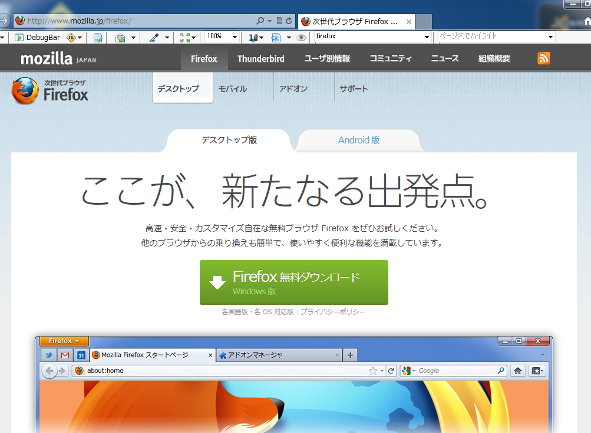
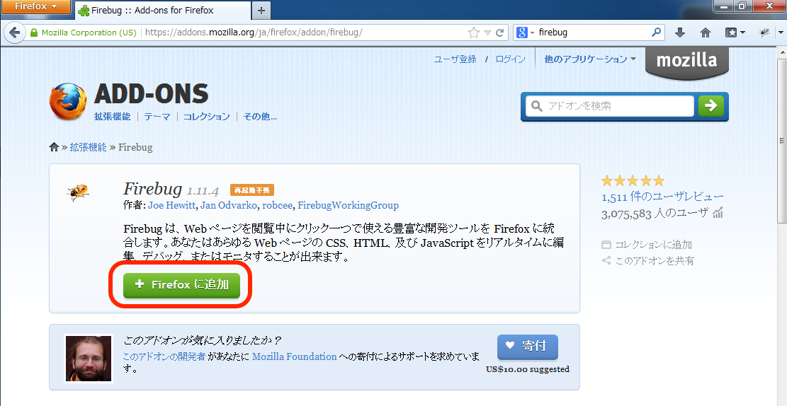
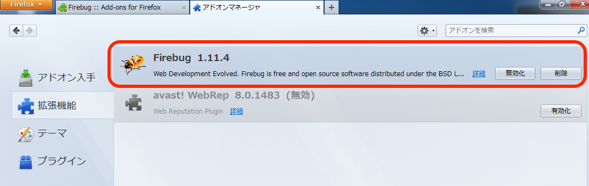
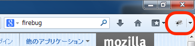
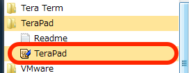
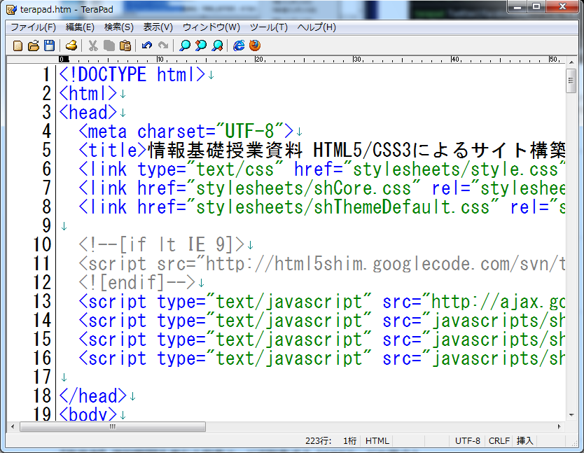
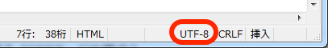
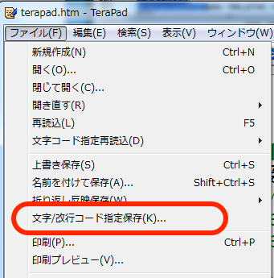
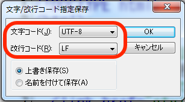

自分のPC/Macで開発環境を構築する
本授業資料は基本的にSFCの特別教室のMacを使って操作することが前提となっているが，Webページ開発やプログラミングといった スキルは授業中に学習するだけではとても満足に習得することはできない． 本ページでは，Windwos環境とMac環境を対象とした，自分の私物マシン上で本授業資料と同等の開発環境を整える方法を解説する．
※本資料の内容はCNSコンサルタントのサポート外の内容のため，全クラスで設定を必須とするものではない． 自分のマシンを使った開発を推奨とするかも含めて，自力で環境構築を行うのに不安があれば担当講師に相談すること
Windows環境
Windows環境での設定について解説する．本ページではWindows 7を対象に解説するが，基本的にはその他のバージョンでも同様に動作するはずである．
FirefoxのインストールとFirebugの設定
本授業資料の推奨環境はFirefoxである．Internet ExplorerやGoogle Chromeでも開発自体には問題がないが，一部のCSSプロパティの解釈 やレンダリング方法・対応状況がブラウザによって異なるので，原則本授業のページ作成を行う場合にはFirefoxを用いるのが良い． Firefoxをインストールするには， Firefoxのトップページから，Firefoxをダウンロードしてインストールする．
昨今のWebブラウザではFirebug相当の機能が標準搭載されるようになったため，Firebugを使うことは特に必須ではないが，本授業資料での解説が Firebugを前提としているためインストールしておいた方が授業との連携上都合が良いのでインストールする． インストールしてFirefoxを起動したら，Firebugのインストールページ から「Firefoxに追加」ボタンを押し，ダイアログに従ってFirebugをインストールする．
正常にインストールが完了したかどうかを確かめるには，左上のFirefoxメニューから「アドオン」を選び「拡張機能」のタブを選択して 右側のアドオン一覧にFirebugが表示されているかどうかを確認する．もし無効化されている場合は有効化すること
また，正常にFirebugが有効化されていれば，右上に見慣れたFirebugアイコンが表示されているはずである．
テキストエディタ（Terapad）のインストール
特別教室の環境ではテキストエディタとしてmiを使っていたが， Windows版のmiは本資料作成時点でまだα版であること， またそれほどWindowのテキストエディタとしてメジャーで無いことから，Windowsのテキストエディタとして長く一般的で， フリーかつ十分な機能を要した TeraPadを インストールする． TeraPadはmiと同じくHTMLのコードハイライト機能などを要し，日本語環境で多くのユーザが使っているので，もし利用していて不明な ことがあった場合にはインターネット上で多くの情報を集めることができる．
TeraPadのホームページの「ダウンロード」から 「インストーラ付き」版のTeraPadをダウンロードしてインストールする．インストールはこれで終了である． 通常インストールすれば，スタートメニューに登録される．
 TeraPadの使い方はほとんどmiと同様である．注意点として，インストールした初期状態だと文字コードがSJISで保存されてしまうことがあるので， 画面下部のステータスバーが「UTF-8」になっていない場合はファイルメニューから「文字/改行コード指定保存」を選び，文字コード「UTF-8」 改行コード「LF」を選択するようにすること．
  CNSとの接続
ここまでで開発環境は一通り揃ったが，このままではCNSの自分のホームディレクトリにアクセスできないため，インターネット経由で CNSの自分のホームディレクトリにアクセスできるようにする必要がある． こちらについてはSSHFSのページで詳しく解説しているので，そちらを参照すること．
Mac環境
次に，Mac環境について説明する．Mac環境は基本的に特別教室の環境に近いので，詳細は省略する．
FirefoxのインストールとFirebugの設定
基本的にWindows版と同様の手順でインストールできる．Firebugのインストール後，正しくインストールされているかの確認を 必ず行うこと．
テキストエディタ（mi）のインストール
Mac環境であれば特別教室と同じmiを利用することができる． miのホームページから最新バージョンをダウンロードしてインストールすれば良い． 必要であればDockへの登録も行っておくと，起動がスムーズにできる．
CNSとの接続
ここまでで開発環境は一通り揃ったが，このままではCNSの自分のホームディレクトリにアクセスできないため，インターネット経由で CNSの自分のホームディレクトリにアクセスできるようにする必要がある． こちらについてはSSHFSのページで詳しく解説しているので，そちらを参照すること．